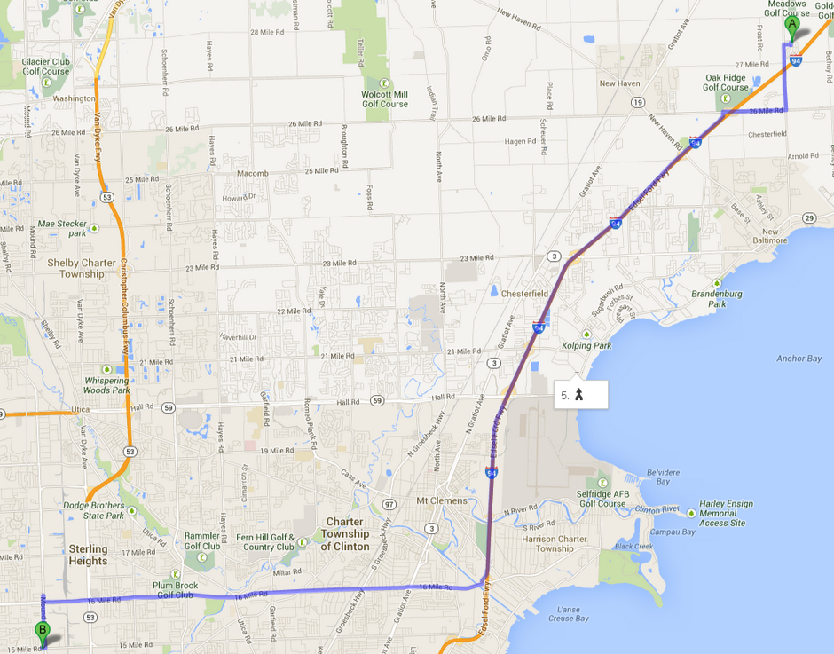

Contact Us
Sterling Auto Care is located on the North side of 15 Mile Road just West of Mound. We are open from 7 a.m. to 5 p.m. Monday to Friday and 7 a.m. to 2 p.m. on Saturday. If you need to get ahold of us you can call during business hours at (586) 264-5530 or email us anytime. If you wish to stop in and see us in person - walk-in appointments are available depending on the availability of technicians - then you can click the image on the right to get directions with Google Maps.
Sterling Auto Care5749 15 Mile Rd
Sterling Heights, MI 48310
(586) 264-5530

Click here to get directions from Google Maps.
Click here to get directions from Google Maps.